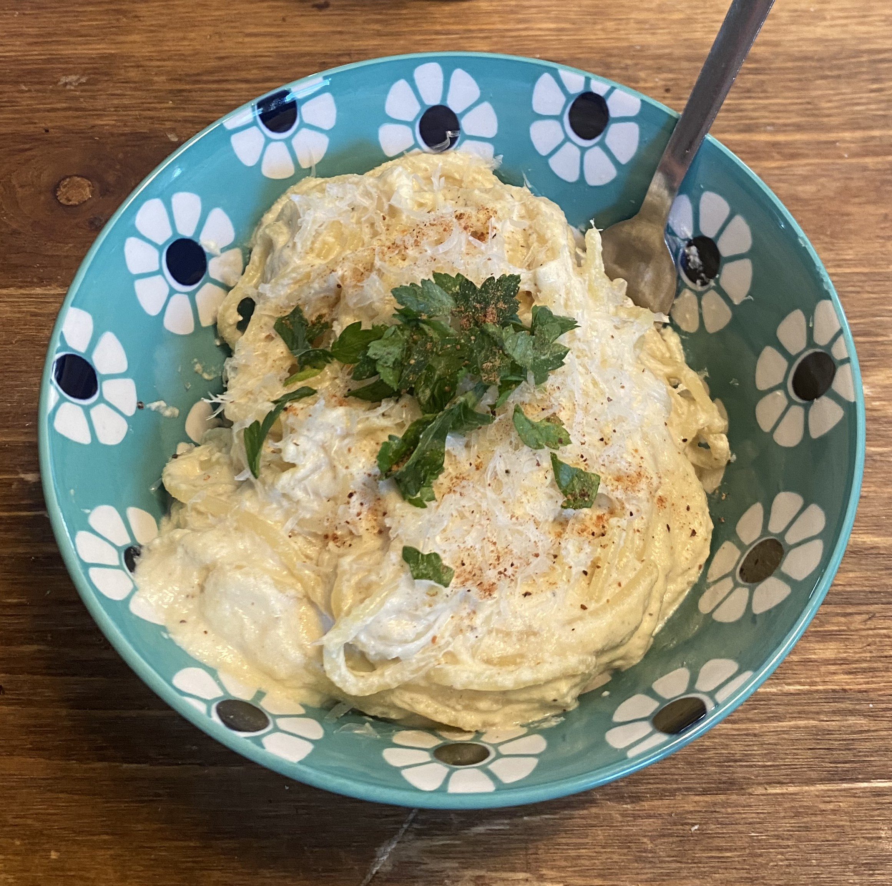

Ingredients
- ½ heaping cup soaked cashews
- 1-2 cups veggie broth
- 1 medium diced white onion
- 4 large garlic cloves, minced
- ½ tsp salt
- ½ tsp black pepper
- 1-2 tbsp lemon juice
- 2 tbsp nutritional yeast
Instructions
- Add the diced onion and half of the veggie broth to a pan over medium heat. Cook until the onion is very tender, about 8 minutes. Next, add the garlic and cook until fragrant and the broth evaporates.
- Add the onion, garlic, and remaining ingredients to a blender. Start with just a little broth and add as needed to thin out.
- Serve on pizza or over pasta (generously salt pasta water) with vegan parmesan, lemon zest, lemon juice, garlic salt, and pepper, to taste.